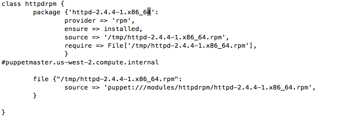
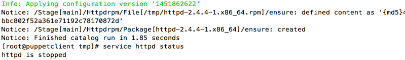
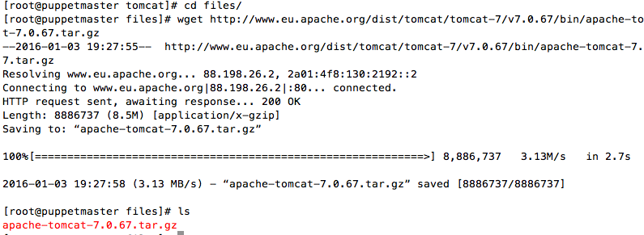
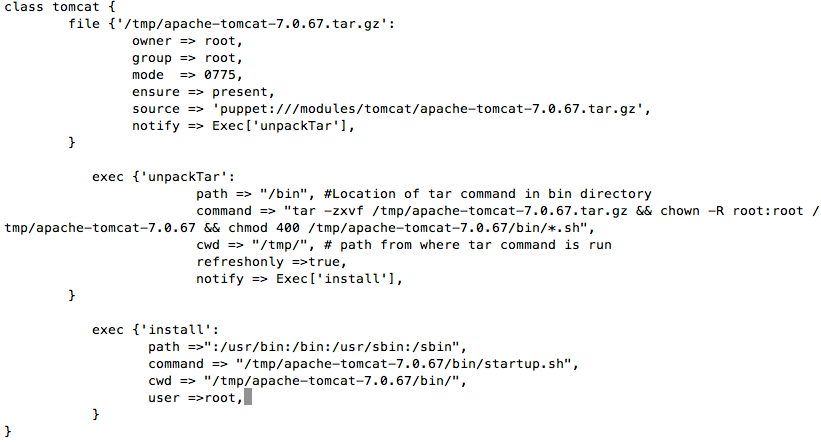
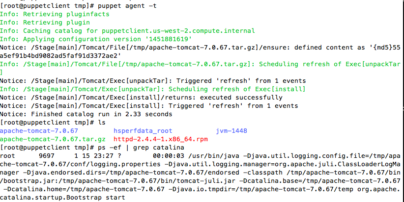

Procedure followed
1) Manifest will copy the rpm file from Puppet master to the puppet agent 2) Install the rpm file on Puppet agent using the local path 3) Provide the name of rpm for the package name on manifest
[root@puppetmaster~]#vi /etc/puppet/modules/httpdrpm/manifests/init.pp
[root@puppetmaster~]# cd /etc/puppet/modules/httpdrpm/files/;ls
httpd-2.4.4-1.x86_64.rpm
[root@puppetmaster~]#vi /etc/puppet/manifest/site.pp
node 'puppetclinet'{ include httpdrpm }
Client Node
On client machine.Rpm file has been transfered to the /tmp/ directory
puppet agent -t
Lets install the tomcat using the modules
[root@puppetmaster~]#cd /etc/puppet/modules/tomcat/files
wget https://url/tomcat.tar.gz
[root@puppetmaster~]# vi /etc/puppet/modules/tomcat/manifests/init.pp
First section of the command will transfer the tarball to the client machine Second section of the command will untar the file Finall section will start up the tomcat
client machine
[root@puppetclient~]# puppet agent -t
We will deploy the epel repo first
Download the package from epel repo